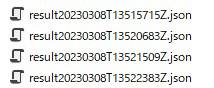

関連商品 紹介：
- モジュールカメラ｜ポータルサイト (i-pro.com)
- 各種マニュアル - Module Camera Technical Information - モジュールカメラ｜ポータルサイト (i-pro.com)

* レンズトライアルキットはAI検査ソフトの正式対応カメラではありませんが、動作はするようです。
本ページは i-PRO株式会社 の有志メンバーにより記載されたものです。
本ページの情報は ライセンス に記載の条件で提供されます。
本ページでは、i-PRO の AI アプリ 「MS-EXFANS01A (AI検査アプリケーション) 」 が出力する検査結果データの構造についてご紹介します。
この内容を応用することで、他のシステムとの連携が可能になります。
関連商品 紹介：
* レンズトライアルキットはAI検査ソフトの正式対応カメラではありませんが、動作はするようです。
| レンズトライアルキット : | MK-DVLTRNP01, | 2.00 |
| AI検査アプリケーション : | MS-EXFANS01A, | 1.00 |
| AI検査マネジメントソフトウェア : | -, | 1.00 |
AI検査アプリケーション(MS-EXFANS01A)及びAI検査マネジメントソフトウェアの外部I/F仕様は公開されていません。
しかし、Raspberry Pi上で動作するAI検査マネジメントソフトウェアのユーザーマニュアルにはストレージのフォルダ構成が記載されていますのでその中身を確認してみます。
(1) ユーザーマニュアル記載内容
ユーザーマニュアル 運用編 「5.2 ストレージのフォルダ構成」が該当箇所になります

機種フォルダを起点として、「カメラフォルダ/result/yyyymmdd/judge」に検査判定結果が格納されているようです。
(2) 検査判定結果格納フォルダ
検査を何回か実行した後にフォルダを確認してみました。検査ポイントは2つ設定しています。

jsonファイルに検査結果が出力されているようです。
jsonファイルの内容を確認して、検査結果がどのように記録されているかを調査します。
jsonファイルをエディタで開いてみます。
{
"camInfo": {
"MAC": "11:22:33:44:55:66"
},
"camDate": {
"DATE": "2023-03-08T16:13:16.65Z",
"TZ": 63,
"DST": 0
},
"algoInfo": {
"bestshotID": "11:22:33:44:55:66",
"fewshotID": "11:22:33:44:55:66"
},
"setting": {
"inImage": {
"width": 1920,
"height": 1080
},
"procImage": {
"width": 448,
"height": 448
},
"outImage": {
"width": 1920,
"height": 1080
},
"framerate": 30,
"threshold": 0.05
},
"capturedImage": "bs20230308T16131665Z_3.png",
"heatmapImage": "hm20230308T16131665Z.png",
"featureVector": [
"fv20230308T16131665Z_0.bin",
"fv20230308T16131665Z_1.bin",
"fv20230308T16131665Z_2.bin"
],
"overallResult": "OK",
"maxScore": 0,
"minScore": 0,
"bsShiftX": 0,
"bsShiftY": 0,
"bsRadian": 0,
"taktTime": 6193,
"detect": [
{
"area": 1,
"personID": "",
"X": 299,
"Y": 231,
"W": 680,
"H": 370,
"judge": "OK",
"score": "0.0980296",
"valid": "1",
"type": "rectangle"
},
{
"area": 2,
"personID": "",
"X": 1119,
"Y": 241,
"W": 575,
"H": 345,
"judge": "OK",
"score": "0.0475913",
"valid": "1",
"type": "rectangle"
}
]
}
以下オブジェクトの値を取得すれば、システム連携が実現できそうです。
camDate : 検査実行日時。UTCの値が入っています。タイムゾーンはi-PRO独自定義の値ですが、受け側でローカル時刻に変換することで運用上の支障はないかと思われます。
overallResult : 総合結果。検査ポイントがすべて検査OKの場合にOK、1つでもNGがあるとNGになります。
detect:judge : 検査結果。各検査ポイント毎に、OK・NGが出力されています。
それ以外の、機種名・カメラ名はフォルダから取得が可能です。
本ページの情報は、特記無い限り下記ライセンスで提供されます。
| 2023/4/18 | - | 新規作成, | 小澤和哉 |
i-PRO - Programming Items トップページ